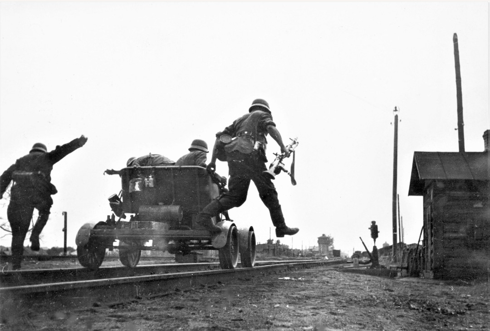
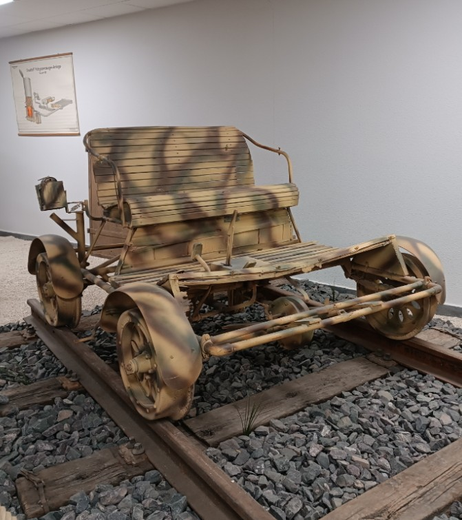

Cette draisine allemande est un véhicule ferroviaire léger utilisé par la Wehrmacht pour la surveillance des voies, la reconnaissance et le transport rapide de personnel. Simple, robuste et très mobile, elle jouait un rôle essentiel sur les lignes stratégiques durant la Seconde Guerre mondiale.

Cette photographie d'époque montre une draisine allemande en pleine action. Les soldats sautent du véhicule pour sécuriser une zone ferroviaire, illustrant parfaitement l’usage tactique de ces engins : reconnaissance rapide, patrouille et intervention immédiate en cas de sabotage ou de menace.

Le camouflage visible sur cette draisine restaurée correspond au schéma allemand adopté à partir de 1943 : Dunkelgelb (jaune sable), Olivgrün (vert olive) et Rotbraun (brun rouge). Ce motif était appliqué sur les véhicules terrestres, mais aussi sur certains matériels ferroviaires utilisés en zone de combat.
Dans les territoires occupés, les draisines étaient indispensables pour surveiller les voies ferrées, souvent ciblées par la Résistance. Elles permettaient également de transporter rapidement des équipes de réparation ou des patrouilles armées, assurant la sécurité des lignes vitales pour la logistique allemande.